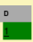
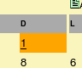
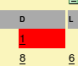

Ajouter un abonnement
L'ajout d'un abonnement nécessite qu'un modèle soit déjà créé pour le périodique.
Les dates de début et de fin de l'abonnement doivent se situer dans la période définie pour le modèle.
Début du modèle < début de l'abonnement
Fin de l'abonnement < fin du modèle
Cliquer sur Ajouter un abonnement
Remplir le premier formulaire de saisie
Saisir un nom et cocher le ou les modèles retenus.
Enregistrer
Une fois l'abonnement créé, il faut ensuite le définir plus précisément.
Définir les paramètres généraux de l'abonnement
L'abonnement s'étend entre les date de début et date de fin.
Il est possible de sélectionner le fournisseur du périodique.
La liste des fournisseurs est paramétrable depuis l'onglet Acquisitions > Fournisseurs, pour avoir l'accès à l'onglet Acquisitions, vous devez avoir activé l'onglet Acquisitions et disposer du droit Acquisitions.
Commentaire permet de saisir un texte libre sur l'abonnement.
Les informations « cote, support, localisation, section, propriétaire, statut, code statistique » seront utilisées pour l'exemplarisation des numéros reçus ; ces informations seront ainsi pré-saisies dans chaque exemplaire reçu.
Cocher exemplarisation automatique permet de générer un numéro d'exemplaire automatiquement à la réception du périodique, en fonction du script de numérotation.
Si l'exemplarisation automatique n'est pas activée dans l'abonnement, il faudra saisir ou douchetter un numéro d'exemplaire pour affecter un code-barres à chaque numéro reçu.
Déplier les informations du modèle et compléter le formulaire lié
Numéro de départ permet de préciser le premier numéro de l'abonnement et de définir ainsi le calcul des numéros ultérieurs.
Numéro de départ du volume permet de préciser le premier numéro de volume de l'abonnement et de définir ainsi le calcul des numéros de volume ultérieurs.
Numéro de départ du tome permet de préciser le premier numéro de tome de l'abonnement et de définir ainsi le calcul des numéros de tome ultérieurs. (Non activé dans le modèle présenté en exemple donc non visible dans la capture).
Délai avant retard délai à partir duquel les numéros non reçus sont considérés en alerte.
Délai critique délai à partir duquel les numéros non reçus sont considérés en alerte critique.
Générer la grille
Une fois tous les paramètres définis, cliquer sur Générer la grille pour afficher le calendrier des jours de réception des numéros de périodique.
En re-générant la grille des numéros à recevoir, PMB recalcule tous les numéros étant à recevoir. Si vous avez déjà enregistré la réception de numéros correspondants à l'abonnement, ces numéros vont apparaître comme étant de nouveau à recevoir.
Modifier manuellement l'abonnement
En cliquant sur une date dans le calendrier, il est possible de modifier la réception du numéro en question.
L'affichage est similaire à la modification manuelle du calendrier dans les modèles prévisionnels.
Pour un jour spécifique, ici le 01/07/2007, il est possible de re-définir le nombre de numéros reçus.
L'ajout de ces numéros hors de toute numérotation pré-définie, est symbolisé par un changement de couleur dans le calendrier.
 | En vert : un ou plusieurs numéros attendus selon les règles définies dans les modèles sélectionnés. |
 | En orange : un ou plusieurs numéros attendus selon les règles définies dans les modèles sélectionnés et au moins un numéro en dehors des règles prédéfinies. |
 | En rouge : uniquement un ou plusieurs numéros en dehors des règles définies dans les modèles sont attendus. |
- Guide en ligne PMB
- Introduction
- Quelques définitions
- Accueil et interface de gestion
- OPAC
- Ergonomie de l'interface de gestion
- Utilisation
- Administration
- Messages d'erreurs, problèmes et FAQ
- Documentation en cours de réalisation